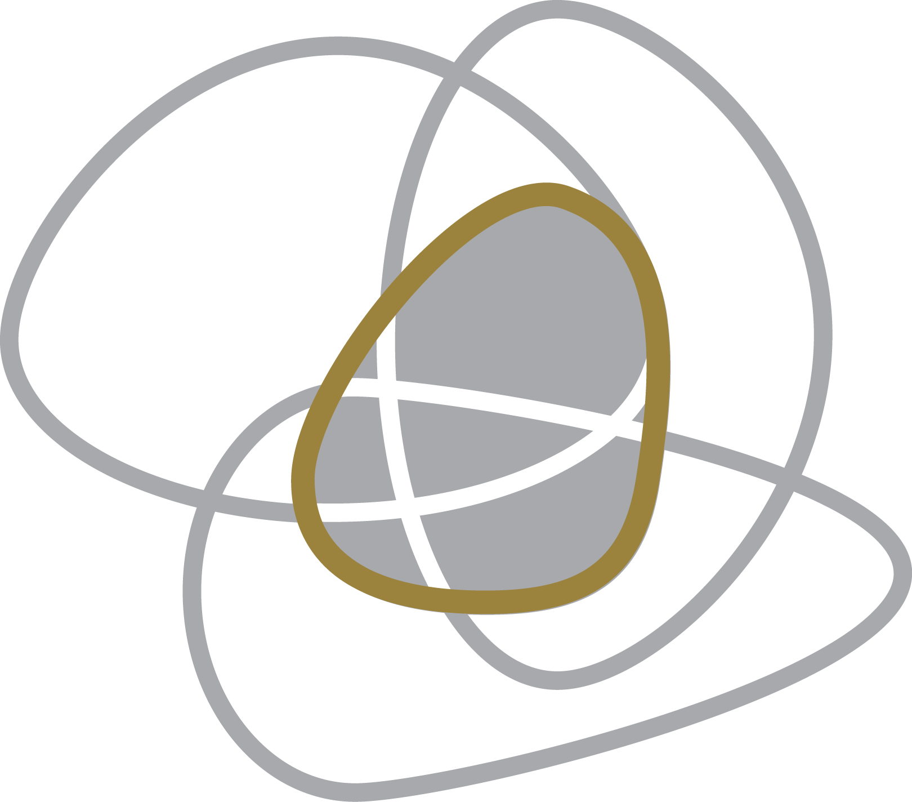
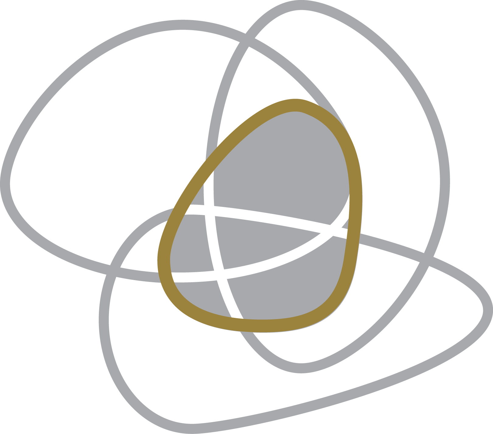

REDES DE ATENDIMENTO PSICANALÍTICO UNBEWUSSTE
A PRIMEIRA REDE UNBEWUSSTE É VOLTADA PARA PESSOAS QUE TRABALHAM EM EMPRESAS OU QUE SÃO EMPRESARIOS.
Você trabalha todos os dias, várias horas ao dia e não tem tempo para pensar em si próprio? Não tem tempo para curtir o amor? Para construir família? Você não consegue nem imaginar como fazer novas relações pessoais ou como terá tempo para filhos?
Você trabalha com entrega de trabalhos, projetos e metas? Você tem pretensões de mudar de cargo e/ou ter aumento de salário? Você se sente estressado todos os dias? Você não consegue se posicionar frente a colegas, chefes
e/ou funcionários?
Não importa de que lado você está das relações profissionais. Empresário, CEO, presidente, gerente, especialista, técnico, secretário, atendente, operário, motoboy, você merece ter um espaço para pensar,
refletir e construir modos de posicionamento frente às situações que aparecem à sua frente.
Muitas vezes, são tantas as demandas e pedidos que nem ao menos sabemos o que pensamos, o que achamos melhor, qual é o nosso
ponto de vista ou o posicionamento naquela situação. É muito importante um espaço de reflexão com profissionais especialistas em inconsciente, especialistas nas leis do inconsciente. Leis essas que nos ofuscam a visão, que nos
fazem equivocar e às vezes nos cegam. O inconsciente nos aponta um caminho, mas, nem sempre, sabemos escutar, ler ou decifra-lo. Assim, ficamos confusos e então, uma outra pessoa decide por nós e vamos deixando a vida nos levar.
A ideia freudiana do UNBEWUSSTE é de que todo sujeito pode ter acesso a seu inconsciente, a seu funcionamento, acesso às suas fraquezas e fortalezas. Às razões pelas quais elas existem, como melhorar os pontos
fracos e como utilizar mais os pontos fortes. Enfim, como ter outro posicionamento para enfrentar a vida.
No UNBEWUSSTE, o sujeito poderá construir suas próprias ideias sobre cada situação e trabalhar para
conseguir se posicionar frente às pessoas que estão ocupando cargos diferentes de sua hierarquia na empresa, frente à colegas, ou mesmo pessoas da família, pois, como envolve o coração, muitas vezes fica ainda mais difícil falar
assuntos sérios com pessoas que amamos.
UNBEWUSSTEatende a todos os tipos de empresa como multinacionais, laboratórios, hospitais, escolas, agências, academias, concessionária, seguradoras. A Rede UNBEWUSSTE é voltado para pessoas que trabalham com gerenciamento
de pessoas e profissionais qualificados. Manejos e estratégias para que o sujeito expresse seu desejo e se posicione na empresa de forma direcionada que seja com o chefe, com os funcionários ou com os colegas. Que assim atinja
seus objetivos e não se sinta sempre sobrecarregada.
Que a pessoa consiga entregar o trabalho e ter sua vida própria. Vida familiar, afetiva, ser mãe, estar perto das crianças. Freud diz em sua obra que existe uma
economia pulsional que precisa ser administrada nos diversos ramos de nossa vida: profissão, amor, saúde, família. Como as empresas dizem, é preciso um “work life balanced”. Ou como Lacan apresenta nos anos 1970, um “savoir-faire”.
Um saber-fazer com a vida, com nosso estilo e nossas capacidades.
Pesquisas inglesas (biblioteca) mostram como a psicanálise lacaniana está sendo muito utilizada no mundo dos negócios. Por exemplo, o artigo How Trust
Functions in the Context of Identity Work, Driver discute o quanto a confiança que a pessoa tem em si própria para executar o trabalho tem a ver com a identificação que ela tem com o trabalho. O quanto ela gosta, o quanto ela se
identifica e assim se sente segura para executá-lo e demonstrar confiança em suas atitudes e decisões. O texto é baseado nos conceitos da psicanálise lacaniana e explica como o dispositivo lacaniano pode auxiliar nessa relação
do sujeito, com seu aparelho psíquico e o trabalho.
Outro exemplo é o artigo The Stressed Subject: Lack, Empowerment and Liberation. Neste artigo Driver discorre sobre o fato das pessoas se sentirem estressadas e
como o estresse é um fenômeno do imaginário que afasta o sujeito de seu próprio desejo inconsciente. O trabalho do dia a dia, muitas vezes, deixa a pessoa alienada. Da casa para o trabalho e do trabalho para casa, na repetição
de um trabalho que se torna maçante e repetitivo, o sujeito passa a não existir e parece ficar ali um simples corpo presente que executa algumas tarefas.
O espaço de pensar da psicanálise é um tempo em que a pessoa
se reconecta com seu inconsciente, com seus próprios pensamentos, sentimentos e desejos. Assim, com o método psicanalítico de falar o que vem à cabeça, articulamos o emocional com o intelectual e a pessoa passa a conseguir ter
mais posicionamento na empresa e em sua vida pessoal. O analista interroga o que cada um deseja, qual a diferença que o sujeito pode contribuir na empresa, como ele pode usar sua criatividade e savoir-faire para se destacar e contribuir
de uma forma inteligente e única, trazendo retorno para a empresa e para o próprio sujeito. Que a pessoa consiga mostrar seu diferencial e ser respeitado, conquistar um nome, um lugar em seu espaço, fortalecendo suas próprias qualidades.
Muitas vezes pensamos que existe um jeito único e certo de ser. Que precisamos executar uma performance e isso deixa a pessoa estressada e maquinal, como se não fosse ela própria. Isso vai gerando uma doença psíquica pois
a pessoa vai ficando distante de si própria, de seu eu verdadeiro, de seu inconsciente. O exercício da análise é resgatar essa essência que ficou perdida em algum momento e trazê-la de volta.
No artigo Learning as
Lack: Individual Learning in Organizations as an Empowering Encounter with Failed Imaginary Constructions of the Self (2010) Driver discute a importância de aprender com a falta. Com o que não está indo bem, com o que não sabemos.
A falta existe e vai aparecer a qualquer momento ou a todo momento. Ou seja, é impossível saber todos os assuntos, saber lidar com todas as pessoas ou mesmo falar todas as línguas. Como diz o filósofo grego Sócrates (470 a.C.)
“Só sei que nada sei”. Quanto mais a pessoa estuda, quanto mais ela trabalha e se empenha, mais ela sente a noção da falta. Mais sabe o quanto ainda falta para saber ou para aprender determinado assunto. Ou seja, uma pessoa em
Empresa e vida Organizacional, quanto mais ela tiver a noção da falta, que a falta existe para todos e a qualquer momento, mais a pessoa vai estar aberta aos imprevistos, às dificuldades e saberá lidar com os problemas. Mais terá
jogo de cintura e “savoir faire” para enfrentar as intempéries que o mundo coorporativo apresenta.
É preciso cada sujeito ter sua singularidade, sua impressão digital, seu talento para ser executado no grupo. O artigo interroga
a falta-a-ser e a falta-a-ter de cada um. Ou seja, o que falta ao sujeito, o que o sujeito deseja, o que ele quer produzir? Somente com a noção de falta, discutida na psicanálise lacaniana, que é possível pensar o que há de mais
produtivo, o que falta a ser construído para que o sujeito faça um diferencial na empresa e em sua vida particular.
Na sequência temos o artigo The Lack of Power or the Power of Lack in Leadership as a Discursively
Constructed Identity. Continuando a falar sobre a falta e discutindo a falta no poder, Driver, através do arsenal psicanalítico, desenvolve a ideia de como as posições de líder são construídas. A autora enfatiza que existe um ideal
de líder que fica no plano do imaginário, pois líderes também fracassam e sentem a falta-a-ser, ou seja, são pessoas de carne e osso. Também se deparam com a falta e têm dificuldades com coisas simples do trabalho. Porém, são pessoas
que se empenham e se esforçam por fazer evoluções e gerenciar pessoas.
A falta, a crise e momentos de baixa fazem parte da vida de todas as pessoas. A angústia surge e é nesse momento em que o sujeito deve se recolher
e se interrogar: O que quero? O que quero para mim neste momento? Qual o caminho que devo pegar?
Ficar no plano do imaginário acreditando que outras pessoas não sentem o vazio ou que essa decisão estaria na mão de
outras pessoas é um engodo que o sujeito cai ao tentar se desviar da angústia. Nos dias atuais, quando a pessoa sente angústia, ela procura sair, se divertir, esquecer, arrancá-la de dentro de si. É uma pena. Freud nos diz que
a angústia é algo que mais temos de verdadeiro. É um sentimento em pedra bruta que merece ser lapidado e ouvido. Nem sempre é fácil, porém, é dentro desse envoltório que está a verdade do inconsciente, a verdade do desejo. Quando
ouvimos e lapidamos em análise, escutamos algo do interior do sujeito, limpo e cristalino, algo que não estava podendo ser dito e escutado pois ouvir nosso inconsciente implica em termos responsabilidade com ele, e isso pode ser
difícil para as pessoas que estão em volta. Podem ter consequências, implicações. Muitas vezes é preciso sair de uma posição passiva de subserviência e aceitar o que vem do outro, para ir para uma posição mais ativa, de quem decide,
se posiciona e escolhe.
Freud, em um texto muito bonito Inibição, sintoma e angústia (1926) diz que se não ouvimos a angústia e ficamos nos desviando dela, ela se transforma em sintoma. O sintoma é ainda mais enigmático,
mais difícil de lidar, mais demorado de tratar. No texto ele explica que antes ele acreditava que o sintoma levava à angústia. A pessoa tinha o sintoma e assim ficava angustiada. Mas percebeu que era ao contrário. Que a pessoa
se angustiava com situações da vida, essa angústia não era ouvida, não era direcionada e se transformava em diferentes e enigmáticos sintomas. Isso nos mostra a importância e a responsabilidade que temos em escutar e traduzir a
angústia. As pessoas ficam muito irritadas e tristes com as situações em que surge a crise, momentos difíceis que aparecem nas relações pessoais ou no trabalho, porque a angústia se sobressai e a pessoa se perde. Mas, muitas vezes,
se a pessoa se ouvir e enfrentar a angústia, essas situações podem ser grandes oportunidades para fazerem uma virada de posição na vida. Oportunidade para pensar, para decidir e escolher uma nova posição na vida.
As pessoas, na maioria das vezes, procuram análise quando se deparam com uma questão, quando estão em crise, quando sentem uma angústia mais profunda. A “angústia é um sinal”. Ela nos aponta algo. Nos paralisa e nos faz crescer
se a escutamos.
O mundo dos negócios coloca o sujeito à prova. São inúmeras as situações em que é preciso apresentar diferentes habilidades.
Aqui, voltamos ao começo da explanação, quando falamos da
importância de ter um “savoir-faire”, um jeito, um estilo pessoal para lidar com as situações. Não é preciso conhecer tudo e saber lidar com todos os problemas, isso também nem existe. Mas é importante ter um jogo de cintura, uma
flexibilidade para, diante de situações inusitadas, ter uma presença de espírito e não ficar na mão do Outro, seguindo o desejo do Outro, mas também conseguir se colocar, direcionando para um lado que gostaria.
Outro
assunto muito discutido no UNBEWUSSTEé a questão da maternidade. Como coadunar casa, filhos, marido, escola, lição de casa, atividades extracurriculares e vida profissional?
Por um lado, é uma vida de equilibrista, por outro, é possível ter grandes conquistas na empresa dependendo da forma com que o sujeito se posiciona, como entrega os trabalhos, como gerencia as questões.
O que
observamos é que os chefes podem, muitas vezes, tentar sugar o máximo possível de seus funcionários, deixa-los estressados e arrasados em determinadas situações. Porém, também é possível observar que os chefes sabem que não adianta
um CV primoroso, é importante levar em conta as características emocionais do profissional: iniciativa, dedicação, competência, trato com pessoas, gerenciamento. Eles sabem também que mandar embora e treinar um novo funcionário
com o perfil da empresa, leva tempo e gasta muito dinheiro. Dessa forma, é muito interessante, para ambas as partes, que o profissional cresça e permaneça na empresa. Que o profissional consiga ser prático e objetivo, chegue o
mais rápido possível ao ponto, entregue o que foi pedido sem fazer sintomas ou se sobrecarregar, redirecionando a angústia de forma produtiva.
Fazer tudo isso sem estar alienado ou numa repetição maçante, mas ao contrário, conseguir sentir alegria, realização, interesse e perceber que sua criatividade foi desenvolvida. Esta é a ideia da psicanálise. Que o sujeito
se sobressaia e mesmo neste mundo corporativo, apareça o desejo e a singularidade de cada um.
Lacan discute a posição que cada sujeito ocupa na família e a posição que cada um ocupa na vida, na frente do chefe,
do marido, dos filhos. Ou seja, independente mente do cargo e da situação hierárquica, para a psicanálise, o que realmente importa é a “posição que o sujeito
ocupa” frente às pessoas e à vida.
Assim, é possível, através de estratégias, táticas e manejos, o sujeito sair de uma posição de humilhação e inferioridade, para uma posição de dignidade, respeito e orgulho. Com a conquista
de espaço e respeito dentro da empresa, fica cada vez mais acessível ter uma vida balanceada entre a vida particular e a profissional.
Venha para o UNBEWUSSTE trabalhar essas questões, amadurecer o aparelho
psíquico para melhor se posicionar e conquistar seus sonhos.
Rede de atendimento UNBEWUSSTE voltada para expatriados e imigrantes que moram em SP e gostariam de fazer psicanálise.
O Brasil é multicultural,
formado pela miscigenação de povos. Índios, Portugueses, Africanos, Europeus, Orientais. E assim sendo criada a cultura brasileira. Hoje recebemos pedidos de análise de estrangeiros que se casam com brasileiros. Ou expatriados
que veem ao Brasil por um determinado tempo deixando família, amigos, hobbies, uma vida que tinham em seus países para começar uma nova vida. Essas pessoas nos procuram pedindo um espaço. Uma escuta para que possam pensar nesse
novo momento, abstrair e digerir essa nova vida, nova cultura. Trazer